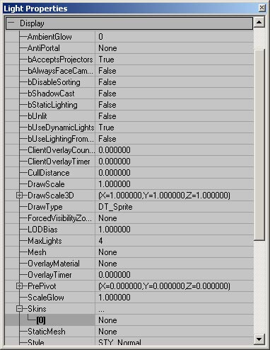
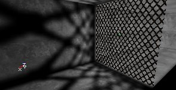
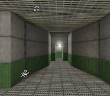
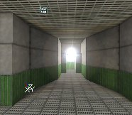

UDN
Search public documentation:
SpecialLightingFeatures
日本語訳
한국어
Interested in the Unreal Engine?
Visit the Unreal Technology site.
Looking for jobs and company info?
Check out the Epic games site.
Questions about support via UDN?
Contact the UDN Staff
한국어
Interested in the Unreal Engine?
Visit the Unreal Technology site.
Looking for jobs and company info?
Check out the Epic games site.
Questions about support via UDN?
Contact the UDN Staff
Special Lighting Features
Document Summary: A tutorial showing how to set up special lighting features. Document Changelog: Last updated by Jason Lentz (DemiurgeStudios?) to separate into more manageable docs. Original author - Lode Vandevenne (UdnStaff)Introduction
This section of the Lighting Tutorials describes more advanced uses of Lights and how to achieve various Lighting Effects. These methods require you to use properties outside of the Lighting and LightColor properties, but with a little extra work, you can achieve some nice effects.TexturePaletteLoop
When you set LightType to LT_TexturePaletteLoop, the light will loop through the colors of the palette of its skin. The palette is the color table of a 8-bit texture, that you can edit in for example Photoshop or PSP. The light goes through the palette in the same order as the palette itself. Any P8 texture has a palette, so TexturePaletteLoop works with all P8 textures. There is a texturepackage Palettes.utx, that has the most useful textures for this, but you can also create a palette yourself if you want to determine exactly when the light has what color. Select the texture you want, and then go to the Light Properties of the light, expand Display --> Skins, click Add and then in the new skin press Use. The name of the selected texture should now appear in the text field.
Select the texture you want, and then go to the Light Properties of the light, expand Display --> Skins, click Add and then in the new skin press Use. The name of the selected texture should now appear in the text field.

If you used the LightType LE_TexturePaletteLoop, the light will now cycle throught the palette colors. You can set the speed and phase of the effect with LightPeriod and LightPhase. The LightHue and LightSaturation are ignored now, because it uses the colors of the palette instead, but LightBrightness still works. If you use for the Skin a texture without palette (for example a RGBA8 or DXT5 texture), the light will not cycle through color, but it'll do something: it goes from dark to bright and then suddenly it's dark again and again fades brighter and so on, but it doesn't get colors. But, in the Texture Properties --> Texture you can give it another palette, for example one of the palettes from the Palettes package. If you do this, the texture looks the same because it doesn't use the palette, but the TexturePaletteLoop will get the colors of the chosen palette. Because this same Skin[0] setting is used for the Corona and LT_TexturePaletteLoop, you can't use a different texture for the corona and the TexturePaletteLoop. However, if you really want this you can use a RGBA8 or DXT texture for the Corona and give this same texture the palette you want in its Texture Properties --> Texture --> Palette.TexturePaletteOnce
TexturePaletteOnce does the same thing as TexturePaletteLoop, only it'll do this only once. You can't use TexturePaletteOnce with normal lights. You need to make a new Actor Class for this. When this new actor is spawned in the game, it will loop through the colors of the palette once and then die. This new actor class should have the following Default Properties:- bStatic = False. You can read more about this bStatic setting in the section Moving Lights.
- Advanced --> bNoDelete = False: this is necessary because the actor must be able to be deleted after it's spawned.
- Advanced --> LifeSpan > 0: here you enter the time that the actor will live. This is also the time it needs to loop through the palette. So for example if you set LifeSpan to 3 seconds, once the actor is spawned it will finish looping through the whole palette in 3 seconds and then die.
- Display --> Skin: the skin you want to use for the palette
- Lighting --> LightType = LT_TexturePaletteOnce
Moving Lights
You can attach lights to a mover or an interpolation path to make them move, and scripted actors like flying rockets or a flashlight use moving lights as well. You can't use the standard Light actor for moving lights because it has bStatic = True by default and setting it to False makes the map fail in netplay. You can make a new actor with bStatic = False by default, or use an existing one, for example a Mover or an Emitter. To make the dynamic light work, also set Lighting --> bDynamicLight = True and Advanced --> bMovable = True. Only if the above settings are correct, you can make the light move, for example along a matinee path. Dynamic lights will never create shadows. They just create a simple sphere of light around them and shine through solid walls. The screenshot on the left shows a static light, and on the right is a dynamic light.
 The LightEffects and LightTypes work with moving lights, and also the Coronas, but these can cause some trouble because the location from where your camera can see the corona doesn't move.
The LightEffects and LightTypes work with moving lights, and also the Coronas, but these can cause some trouble because the location from where your camera can see the corona doesn't move.
Coronas
A corona is a 2D picture placed on the light source. It is not like a 2D sprite, because 2D sprites become smaller on your screen if you walk further away from them. The corona of a light is alway as large on your screen. This can be used for very nice effects and add a lot of atmosphere to the map. To give a light a corona, set in the Light Properties --> Lighting --> bCorona to True. Then go to Display --> Skins, press Add, then select [0]. Select a texture in the Texture Browser, and then press Use. Then rebuild geometry, and the corona should appear if the camera is close enough to the light. To change the size of the corona, use Display --> DrawScale. Make it smaller than 1 for a small corona, and larger for a big corona.
Then rebuild geometry, and the corona should appear if the camera is close enough to the light. To change the size of the corona, use Display --> DrawScale. Make it smaller than 1 for a small corona, and larger for a big corona.


 The LightRadius determines the distance from which you can see the corona. So you can't change the radius of the lighting sphere, and the corona distance independently. If you want to make a light with a very small radius, but with a corona that can be seen from very far, make 2 lights: one without corona, and with a small radius, and another one with a corona, with LightBrightness = 0, and with a large radius.
Under the Corona tab in the Light Properties you have a few more variables to play with. These allow you to fine tune the attributes of the corona as well as add a few more cool effects.
The LightRadius determines the distance from which you can see the corona. So you can't change the radius of the lighting sphere, and the corona distance independently. If you want to make a light with a very small radius, but with a corona that can be seen from very far, make 2 lights: one without corona, and with a small radius, and another one with a corona, with LightBrightness = 0, and with a large radius.
Under the Corona tab in the Light Properties you have a few more variables to play with. These allow you to fine tune the attributes of the corona as well as add a few more cool effects.

- CoronaRotation: this attribute controls the rate at which the corona rotates as the camera approaches the corona. Value above 1.0 make the corona rotate faster as you approach or back away, while values smaller than 1 slow this effect for more subtle corona rotation
- CoronaRotationOffset: This determines the initial offset of the Corona skin. If you are looking to have the corona at a specific rotation at a specific distance, alter this value to get the desired rotation. Note that the standard unreal units for rotation use 65536 as a full circle (rather than 360�), so in other words, a rotation of 180� would be 32768 and a 45� angle would be 16384.
- MaxCoronaSize: Coronas actually change their size as you approach or move away from them. As you get further away they increase in size. This value sets a cap on how large the corona may get. Note, it may not reach its maximum size if the LightRadius (under Light Properties --> Lighting) is set to low. for a LightRadius of 64 only a MaxCoronaSize of 1000 will be displayed. If you want a Max Corona size of 2000, either double the draw scale, or set the LightRadius to 128.
- MinCoronaSize: As you approach coronas, the shrink, but by changing this value you set a cap on how small the corona can get.
- UseOwnFinalBlend: Coronas use their own FinalBlend material, but if you want to customize these, you can create your own FinalBlend material and once you set this value to true, assign your FinalBlend material in place of the texture you would normally be using for the Corona under Light Properties --> Display --> Skins.
Projective Textures
With Projective Textures, you can paint your own shadow and project it on almost anything, including meshes, Static Meshes, terrain and BSP, but not -yet- particles. More about this will be in the Projective Textures Tutorial that will be later on UDN. For example, the shadow of this tree is made with a Projective Texture, and not with the ray tracer. Note how extremely detailed this shadow is, much more detailed than a ray traced shadow on a BSP surface with High Shadow. Also the advantage is it looks uniform on any kind of geometry, and when you walk under the tree and hold a weapon, you'll see the shadow on the weapon, or if another player stands on the tree, you'll see the shadow of the leaves on him. You can use a colored Projective Texture for example for light through stained glass, and an animated Projective Texture for example for the shadow of a rotating fan. For more on Projectors, see the ProjectorsTableOfContents.
You can use a colored Projective Texture for example for light through stained glass, and an animated Projective Texture for example for the shadow of a rotating fan. For more on Projectors, see the ProjectorsTableOfContents.